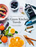

This is a great one-pan wonder – roast veg, cheesy croutons and a punchy herby dressing. It's just perfect for summer.
Serves: 2
Time: 30min
Dificulty Super hard
vegitarian
Summer
Share this recipe

Found in
The green kitchen Travels
By: Jamie Oliver
2 courgettes
150 g runner beans
70 g ciabatta
6 radishes , with tops
3 cloves of garlic
100 ml white wine , or organic vegetable stock
olive oil
25 g Cheddar cheese
extra virgin olive oi
1 teaspoon runny honey
1 tablespoon red wine vinegar
a few sprigs of fresh dill, flat-leaf parsley, chives
Instuctions
Preheat the oven to 190ºC/375ºF/gas 5.
Trim the courgettes, halve lengthways, then slice, along with the runner beans, into 2cm pieces. Tear the ciabatta into 2cm chunks and add all this to a roasting tray, along with the radishes and unpeeled garlic.
Pour in the wine or stock, season with sea salt and pepper and drizzle over 2 tablespoons of olive oil.
Grate the Cheddar and sprinkle over the bread pieces. Roast in the oven for 35 to 40 minutes, until the courgettes are cooked through.
Combine 2 tablespoons of extra virgin olive oil with the honey and vinegar. Pick and finely chop the herbs and stir through; season and set aside.
Remove the tray from the oven and drizzle with the dressing. This is lovely served on a bed of spinach.